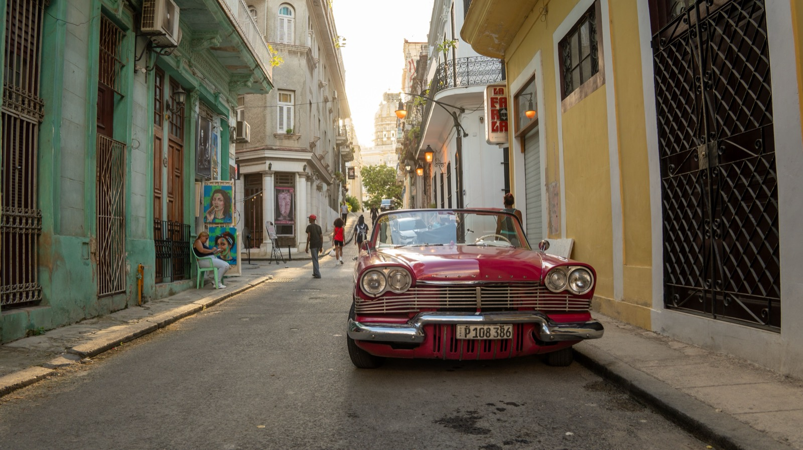
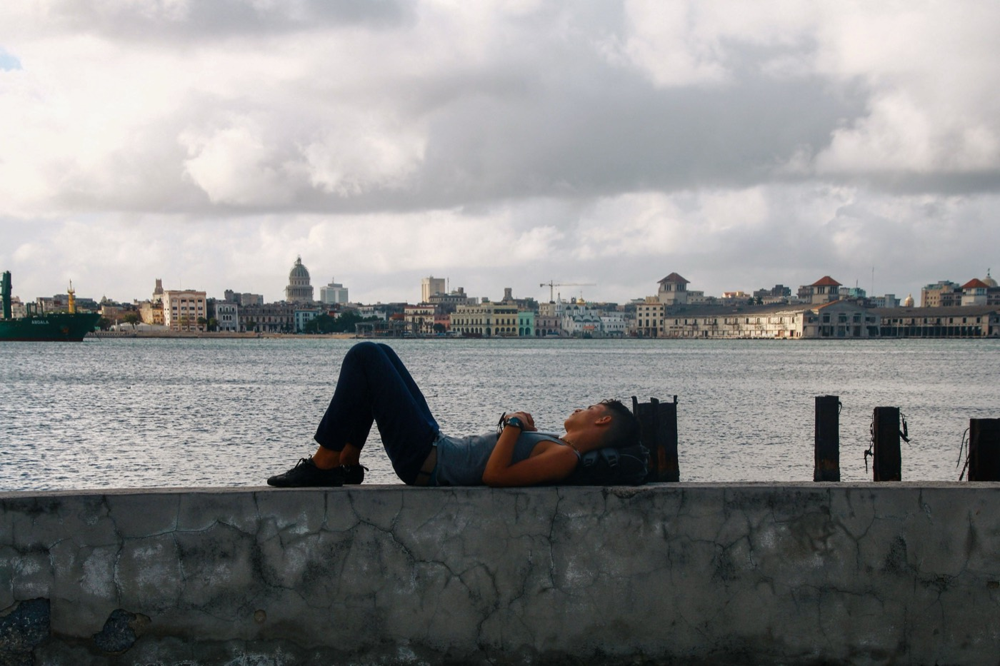

Moving to Cuba in 2026
The Caribbean's largest island is one of its most fascinating, and one of the hardest to actually move to. A straight look at residency, cost, healthcare, and the extra US-sanctions layer for Americans.

- Cuba has no retirement visa, no nomad visa and no ordinary residency route. The realistic paths are marriage, a child born on the island, or a work or study contract.
- The peso has lost more than 95% of its value since 2020, and the IMF expects GDP to shrink 7.2% in 2026.
- Blackouts in 2026 run 30 to 40 hours in Havana and up to 70 in the provinces. That is the single biggest practical obstacle to living here.
- Foreigners can own property, but generally only as permanent residents. There are no mortgages, so every purchase is cash.
- Americans face a second legal system entirely, and OFAC does not authorise buying property in Cuba without specific permission.
Cuba is not set up for immigration, and no amount of wanting it to be changes that. It is the largest and in many ways the most captivating island in the Caribbean, with music, architecture and community that nowhere else can match. It also has no standard residency, retirement or digital-nomad route. This guide covers what is genuinely possible, what it costs, and what daily life looks like in 2026, which is harder than it was even a year ago.
Can you actually move to Cuba?
For most people, no — not in the ordinary sense. Cuba maintains tight state control over foreign residence, with no publicly advertised programs for retirees, investors, or remote workers. Long-term residency is possible but narrow and bureaucratically opaque.
The narrow legal paths
- Family ties: marriage to a Cuban citizen, or having a child born on the island (the most reliable route).
- Work or study: a contract with a state enterprise or approved foreign company, or enrolment at a Cuban institution.
- Otherwise: you can string together tourist stays, up to about three months via monthly extensions, but that's visiting, not living.
Permanent residency (residencia permanente), once granted, does confer real benefits, including near-citizen rights, access to healthcare, the ability to be self-employed and buy a vehicle or property. Qualifying is the hard part. Document/translation costs alone run around $1,500.
The number that explains everything else
Before the visas or the beaches, look at what has happened to the money. In 2020, one US dollar bought 42 Cuban pesos on the informal market. In June 2026 it bought 695.
That line is the whole story. It is why the shelves are thin, why professionals earn less in a month than a carton of eggs costs, and why anyone with access to hard currency now lives in a visibly different country from their neighbours.
As a foreigner with outside income, you land on the fortunate side of that divide. Sit with what that means before you romanticise it.
Cost of living: the dual-market catch
Cuba looks cheap until you notice which economy you are shopping in. There are two. A subsidised local market priced in pesos, and a dollar-indexed market for tourists and foreigners, which is the one you will mostly live in.
In Havana, a foreigner realistically spends around €1,300 a month. Frugal living in a smaller city costs considerably less. Neither number tells you much on its own, because the binding constraint here is not price. It is availability. Money does not help when the shelf is empty, and in 2026 the shelf is often empty.
Healthcare & daily friction
Cuba's celebrated free healthcare mostly does not apply to you. Foreigners are directed to paid international clinics, and chronic medicine shortages mean many foreign residents fly to Mexico once or twice a year simply to restock prescriptions. Plan for that as a recurring cost and a recurring errand.
Then there is the electricity. In 2026 the national grid is running deficits above 2,000 MW. Havana sees blackouts of 30 to 40 hours, and other provinces have gone up to 70. Not thirty minutes. Thirty hours.
Everything else in daily life bends around that fact: refrigeration, water pumps, internet, air conditioning in a Caribbean summer, and any kind of remote work. If you are considering this, price a generator and a serious battery system as necessities rather than luxuries.
For Americans: the sanctions layer
US citizens face a second legal system entirely. Travel is legal only under one of 12 permitted categories (tourism isn't one), OFAC bars transactions with a long list of restricted government-owned hotels and stores, and there is no US sanctions category for permanently relocating to Cuba. Policy also swings with each administration. Any American considering it must navigate both Cuban immigration and OFAC compliance carefully.

Can a foreigner own a home in Cuba?
Yes, with conditions, and the conditions are the whole story.
Decree-Law 288 legalised private property sales in 2011 and opened the market to foreign nationals holding permanent residency. That is the gate. Without permanent residency you generally cannot buy on the private market, though authorised Cuban agencies can sell specific condominium developments in designated zones to non-residents.
The mechanics, once you are through the gate:
- Cash only. There is no functioning mortgage market. A draft housing law under discussion in 2026 proposes introducing mortgages for the first time, but it has not passed.
- One home plus one holiday home per person, both registered with the Property Registry.
- 4% transfer tax on declared value, and every transaction legally requires a notary.
- Some properties are simply unavailable, including those in heritage zones, tourist zones, areas of state economic interest, and anything under litigation or a life estate.
- Owning property can support a visa. Decree 305 created a Real Estate Resident category, a one-year visa renewable for a second year.
One warning worth more than the rest. Putting a house in a Cuban spouse's or friend's name is common and it is dangerous. If the relationship ends, the Cuban national holds legal title and your recourse is close to nonexistent. People lose everything this way.
Add that most of the housing stock needs serious repair, and that materials and trades are scarce, and a cheap purchase price stops looking cheap.
Bottom line
Cuba rewards visiting and punishes moving. It is a place for extended cultural stays, or for people with real family ties, and not a conventional expat or retirement destination in 2026.
That is not a judgement about the country. It is arithmetic about the grid, the currency and the visa system. If those three things change, this page changes with them.
If what you actually want is a Caribbean life with a workable legal path, the Dominican Republic, Puerto Rico or the eastern Caribbean will get you there with a fraction of the friction. Our guide to all 29 islands compares them properly.
Relocating is step one. Owning the home is step two.
SORA designs and builds homes across the tropics, with our deepest roots in Panama and Costa Rica, where residency is straightforward and building costs a fraction of the coastal Caribbean. If your move is really about a place of your own in the sun, it is worth seeing what a fixed-price build looks like before you commit to any one island.
Frequently asked questions
Can Americans move to Cuba?
Not in the ordinary sense. Cuba has no standard residency, retirement or digital-nomad programme. Long-term residency generally requires marriage to a Cuban, a child born on the island, or a work/study arrangement. Americans also face a separate layer of US sanctions. Travel is allowed only under 12 permitted categories (tourism isn't one), and there is no US sanctions category for permanently relocating to Cuba.
How much does it cost to live in Cuba as a foreigner?
It looks cheap but expats rarely pay local prices, because you will mostly live in a dollar-indexed tourist market. In Havana a foreigner realistically spends around €1,300/month; smaller cities are cheaper. Foreigners can own property, but generally only as permanent residents, and always in cash because there is no mortgage market.
Can a foreigner buy a house in Cuba?
Generally only as a permanent resident, under the 2011 Decree-Law 288 framework. Authorised agencies can also sell certain condominiums in designated zones to non-residents. There are no mortgages, so purchases are cash, transfer tax is 4%, and a notary is mandatory. Never put the title in a Cuban partner's name to get around the rule.
How bad are the blackouts in 2026?
Bad enough to be the deciding factor. The national grid is running deficits above 2,000 MW. Havana sees outages of 30 to 40 hours and some provinces have run to 70. Refrigeration, water pumps, internet and air conditioning all depend on solving this privately, which means a generator and battery storage.
What is healthcare like for foreigners in Cuba?
Cuba's free public system largely doesn't apply to foreigners, who use paid 'international' clinics. Chronic medicine shortages are a serious issue, and many foreign residents travel to Mexico once or twice a year to restock prescriptions, so comprehensive insurance and planning are essential.
Sources and verification
Figures in this guide were checked against primary and authoritative sources on 3 September 2026. Immigration, tax, and cost figures change, so always confirm the current rules with the official body or a licensed professional before acting.
- US Treasury OFAC, Cuba sanctions, official US rules governing travel & transactions
- US State Department, Cuba, travel advisory & entry rules
- Cuba Dirección de Inmigración y Extranjería, official immigration authority
- 2024 to 2026 Cuba blackouts, running record of the national grid crisis
- BTI 2026 Cuba Country Report, economic and governance assessment